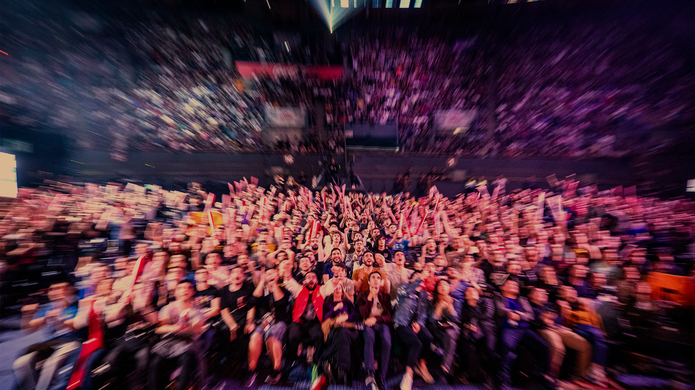

Valorant se ha vuelto activo dentro de esports. Riot Games decidió crear el primer
torneo llamado "First Strike" para establecer una base para crear una escena de deportes
electrónicos con el juego. En noviembre de 2020, Riot Games anunció la serie de torneos llamada
Valorant Champions Tour (VCT), que es una competencia de un año que consta de tres niveles:
Valorant Challengers: competiciones regionales que califican para Masters
Valorant Masters: competiciones internacionales a mitad de temporada, divididas en muchas etapas
Valorant Champions - el campeonato mundial del año
El primer Valorant Champions se celebró del 1 al 12 de diciembre de 2021 en Berlín.
Acend derrotó a Gambit Esports por 3-2 en la final y se convirtió en el primer campeón mundial de esports "Valorant".
Valorant Champions 2022 se celebró del 31 de agosto al 18 de septiembre en Estambul.
LOUD derrotó a OpTic Gaming por 3-1 en la final y se convirtió en el segundo campeón mundial de esports "Valorant".

FNATIC se consagró campeón del Masters Tokio 2023 de VALORANT al vencer a Evil Geniuses por 3-0 en una serie que fue muy pareja. Alfajer fue el MVP de la final que se disputó ante una multitud en el Makuhari Messe, Prefectura de Chiba. Este es el segundo título internacional consecutivo para FNATIC, tras haberse consagrado en el VALORANT LOCK//IN de San Pablo a principios de marzo. Es la primera vez en la historia del VALORANT que un equipo se impone back to back en eventos de este calibre.